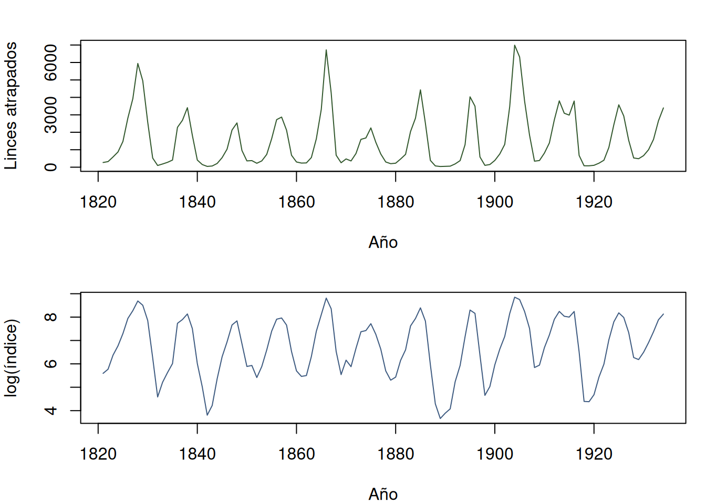
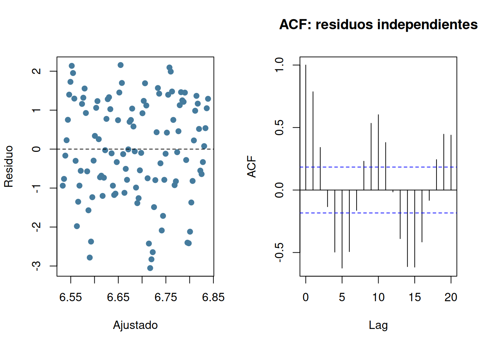
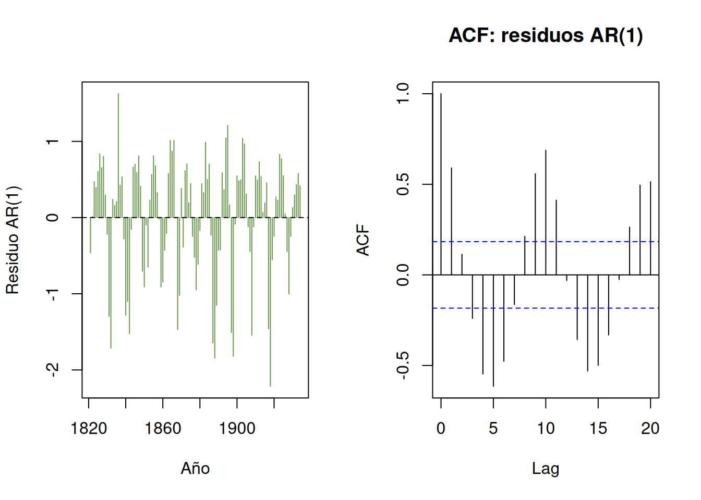

data("lynx", package = "datasets")
d <- data.frame(year = as.integer(time(lynx)), index = as.numeric(lynx))
d$log_index <- log(d$index)
d$time_centered <- d$year - mean(d$year)
stopifnot(nrow(d) == 114L, !anyNA(d), all(d$index > 0))
stopifnot(all(diff(d$year) == 1L), d$year[1] == 1821L,
d$year[nrow(d)] == 1934L)
list(range_year = range(d$year), range_index = range(d$index),
spacing = unique(diff(d$year)), duplicated_year = anyDuplicated(d$year))
#> $range_year
#> [1] 1821 1934
#>
#> $range_index
#> [1] 39 6991
#>
#> $spacing
#> [1] 1
#>
#> $duplicated_year
#> [1] 09 Monitoreo ecológico y análisis de tendencias
Índices repetidos, dependencia y cambio temporal
Monitorear es medir repetidamente una población, comunidad o condición ambiental con un protocolo estable para describir estado y cambio. Una secuencia larga no compensa cambios de cobertura, esfuerzo o detección. El primer resultado de un programa es una serie comparable; el segundo es una inferencia cuya escala y alcance están definidos (Sutherland 2006; Gregg 2008).
9.1 Objetivo, indicador y unidad temporal
Un objetivo operativo especifica variable, dominio espacial, estación, frecuencia y cambio relevante. Un indicador es una medición relacionada con el proceso de interés; no necesariamente es abundancia. Capturas, registros acústicos o huellas pueden variar por población, esfuerzo y detectabilidad:
\[ I_t \approx N_t q_t, \]
donde \(I_t\) es el índice, \(N_t\) la cantidad ecológica y \(q_t\) la fracción que el protocolo convierte en registros. Solo con \(q_t\) comparable, o modelado con datos auxiliares, el cambio de \(I_t\) informa cambio relativo de \(N_t\) (Henderson y Southwood 2016).
La unidad de análisis puede ser sitio-año, transecto-año o un total anual. Réplicas espaciales permiten separar variación entre sitios de cambio común. Una sola cifra anual no permite estimar esa variación espacial, aunque tenga muchos años.
9.2 Diseño de un programa de monitoreo
Un marco estable incluye sitios permanentes o una muestra repetida con reglas conocidas. Estratificación garantiza representación de hábitats; paneles rotativos reparten esfuerzo; sitios centinela ofrecen continuidad pero no generalización probabilística automática (Lohr 2022). Deben conservarse:
- identificador y coordenadas de la unidad;
- fecha, duración, área y esfuerzo;
- instrumento, observador y versión del protocolo;
- clima, accesibilidad y cambios de hábitat;
- ceros válidos, visitas fallidas y datos faltantes separados.
Cambiar simultáneamente instrumento y periodo crea una ruptura que puede parecer tendencia. Una fase de solapamiento entre métodos permite calibración; sin ella, es más prudente analizar periodos separados.
9.3 Tendencia y cambio ecológico
Para una tendencia lineal,
\[ g(I_t)=\beta_0+\beta_1(t-t_0)+\varepsilon_t, \]
donde \(g\) puede ser identidad o logaritmo. En escala logarítmica, \(100(e^{\beta_1}-1)\) es el cambio porcentual anual aproximado del índice. La pendiente resume un cambio medio monotónico; no describe ciclos, pulsos ni mecanismos. El año de referencia \(t_0\) mejora interpretación y estabilidad numérica (Manly y Navarro Alberto 2015).
Observaciones consecutivas suelen parecerse. Si \(\operatorname{Cor}(\varepsilon_t,\varepsilon_{t-1})=\rho\), tratar los años como independientes puede subestimar incertidumbre. Una regresión con errores de primer orden estima pendiente y dependencia conjuntamente. Es adecuada solo si residuos no conservan estructura importante; gráficos, autocorrelaciones y predicciones retrospectivas son parte del diagnóstico (Henderson y Southwood 2016).
9.4 Incertidumbre, sensibilidad y comunicación
El intervalo de una pendiente condiciona en el periodo, indicador y modelo. No incluye automáticamente error de detección, cambios de protocolo ni sesgo de cobertura. Para series dependientes, el remuestreo debe conservar tramos contiguos, no años aislados. Con ciclos fuertes, ninguna pendiente única debe presentarse como la dinámica completa.
La sensibilidad compara escalas, ventanas temporales y observaciones influyentes definidas por razones científicas. Probar muchos puntos de corte hasta hallar una pendiente deseada es selección de resultados. Deben mostrarse trayectoria, magnitud, intervalo y alcance, no solo una decisión dicotómica.
9.5 Aplicación completa: índice histórico de capturas de lince
9.5.1 Procedencia, diseño y estimando
datasets::lynx contiene 114 totales anuales de linces atrapados en Canadá entre 1821 y 1934. La documentación de R vincula la serie histórica con el registro de capturas de la región del río Mackenzie (Campbell y Walker 1977). No son conteos de un censo probabilístico ni estimaciones corregidas por esfuerzo.
La unidad temporal es el año y solo hay un total agregado por año. El estimando principal es el cambio porcentual anual medio del índice de capturas durante 1821–1934, bajo una tendencia log-lineal con dependencia de primer orden. No se estimará abundancia de lince ni una tendencia poblacional separada de esfuerzo, mercado, regulación o detectabilidad.
9.5.2 Importación y auditoría
La ausencia de años faltantes facilita modelar dependencia, pero no informa si el esfuerzo de captura fue constante ni si un cero habría sido registrado.
9.5.3 Exploración de trayectoria y escala
op <- par(mfrow = c(2, 1), mar = c(4, 4, 2, 1))
plot(index ~ year, d, type = "l", col = "#31572c",
xlab = "Año", ylab = "Linces atrapados")
plot(log_index ~ year, d, type = "l", col = "#3d5a80",
xlab = "Año", ylab = "log(índice)")
par(op)
aggregate(index ~ cut(year, breaks = seq(1820, 1940, 20)), d,
function(x) c(media = mean(x), mediana = median(x), maximo = max(x)))
#> cut(year, breaks = seq(1820, 1940, 20)) index.media index.mediana
#> 1 (1.82e+03,1.84e+03] 1792.250 1173.000
#> 2 (1.84e+03,1.86e+03] 1003.400 615.000
#> 3 (1.86e+03,1.88e+03] 1396.550 721.500
#> 4 (1.88e+03,1.9e+03] 1211.200 429.000
#> 5 (1.9e+03,1.92e+03] 2235.450 1612.000
#> 6 (1.92e+03,1.94e+03] 1611.214 1334.500
#> index.maximo
#> 1 5943.000
#> 2 2871.000
#> 3 6721.000
#> 4 4431.000
#> 5 6991.000
#> 6 3574.000La serie exhibe oscilaciones grandes y repetidas. El logaritmo reduce la relación entre nivel y amplitud, pero no elimina la dependencia ni convierte capturas en abundancia.
9.5.4 Tendencia preliminar y dependencia
fit_independent <- lm(log_index ~ time_centered, data = d)
summary(fit_independent)$coefficients
#> Estimate Std. Error t value Pr(>|t|)
#> (Intercept) 6.68593287 0.120668655 55.4073705 3.084475e-83
#> time_centered 0.00270325 0.003666882 0.7372068 4.625382e-01
op <- par(mfrow = c(1, 2))
plot(fitted(fit_independent), residuals(fit_independent), pch = 19,
col = "#457b9d", xlab = "Ajustado", ylab = "Residuo")
abline(h = 0, lty = 2)
acf(residuals(fit_independent), main = "ACF: residuos independientes")
par(op)El modelo independiente sirve como contraste. Una autocorrelación residual grande indica que su error estándar no representa adecuadamente la información temporal.
9.5.5 Estimación con errores dependientes
stats::arima() permite una regresión sobre el tiempo con errores AR(1). La pendiente sigue siendo log-lineal; la estructura de error reconoce continuidad entre años.
fit_ar1 <- arima(d$log_index, order = c(1, 0, 0),
xreg = d$time_centered, include.mean = TRUE,
method = "ML")
co <- coef(fit_ar1)
V <- fit_ar1$var.coef
se_slope <- sqrt(V["d$time_centered", "d$time_centered"])
ci_slope <- co["d$time_centered"] + qnorm(c(.025, .975)) * se_slope
annual_change <- 100 * (exp(c(estimate = co["d$time_centered"],
lower = ci_slope[1], upper = ci_slope[2])) - 1)
data.frame(phi = co["ar1"], annual_percent_change = annual_change[1],
lower = annual_change[2], upper = annual_change[3],
row.names = NULL)
#> phi annual_percent_change lower upper
#> 1 0.7904719 0.6168716 -1.274413 2.544388El cambio porcentual resume el índice durante todo el periodo. Incluso un intervalo estrecho no identificaría el mecanismo ni corregiría cambios históricos de esfuerzo.
9.5.6 Incertidumbre por bloques temporales
Se remuestrean bloques circulares de diez años y se estima una pendiente lineal en cada serie reconstruida. Es un complemento no paramétrico aproximado que conserva dependencia local, no una sustitución del modelo principal.
set.seed(909)
B <- 1999
n <- nrow(d)
block_length <- 10L
block_slope <- replicate(B, {
starts <- sample(seq_len(n), ceiling(n / block_length), replace = TRUE)
idx <- unlist(lapply(starts, function(s) ((s - 1L + 0:(block_length - 1L)) %% n) + 1L))
yb <- d$log_index[idx[seq_len(n)]]
coef(lm(yb ~ seq_len(n)))[2]
})
100 * (exp(quantile(block_slope, c(.025, .5, .975))) - 1)
#> 2.5% 50% 97.5%
#> -0.83183796 -0.01101339 0.836372199.5.7 Diagnósticos del modelo dependiente
res <- residuals(fit_ar1)
op <- par(mfrow = c(1, 2))
plot(d$year, res, type = "h", col = "#6a994e",
xlab = "Año", ylab = "Residuo AR(1)")
abline(h = 0, lty = 2)
acf(res, main = "ACF: residuos AR(1)")
par(op)
Box.test(res, lag = 10, type = "Ljung-Box", fitdf = 1)
#>
#> Box-Ljung test
#>
#> data: res
#> X-squared = 267.06, df = 9, p-value < 2.2e-16Autocorrelación restante, rachas o varianza cambiante indicarían que pendiente más AR(1) es un resumen incompleto. En esta serie cíclica se espera que un modelo tan simple no capture toda la estructura; eso limita inferencia, no justifica añadir componentes sin una pregunta ecológica y apoyo teórico.
9.5.8 Sensibilidad a escala y periodo
estimate_ar1 <- function(z, response = c("log", "raw")) {
response <- match.arg(response)
y <- if (response == "log") log(z$index) else z$index
x <- z$year - mean(z$year)
f <- arima(y, order = c(1, 0, 0), xreg = x, method = "ML")
unname(coef(f)["x"])
}
periods <- list(full = d, from_1841 = subset(d, year >= 1841),
through_1914 = subset(d, year <= 1914))
sens <- data.frame(
period = names(periods),
log_slope = vapply(periods, estimate_ar1, numeric(1), response = "log"),
raw_slope = vapply(periods, estimate_ar1, numeric(1), response = "raw")
)
transform(sens, annual_percent = 100 * (exp(log_slope) - 1))
#> period log_slope raw_slope annual_percent
#> full full 0.006149768 6.267635 0.6168716
#> from_1841 from_1841 0.013559051 13.275040 1.3651392
#> through_1914 through_1914 0.007704788 9.530380 0.7734547Si la pendiente cambia mucho al desplazar veinte años los extremos, la afirmación de una tendencia secular depende de la ventana frente a las oscilaciones. La escala original expresa capturas por año; la logarítmica, cambio proporcional.
9.5.9 Interpretación
El resultado defendible describe dirección y magnitud media del índice histórico, su intervalo y la dependencia estimada. La gráfica muestra que esa pendiente no resume los pulsos dominantes. Sin esfuerzo, área efectiva, regulación y detección, no puede llamarse abundancia ni atribuirse a una causa ecológica. Para monitoreo actual se necesitarían sitios o rutas replicados, esfuerzo registrado y una fase de calibración cuando cambie el protocolo.
9.6 Síntesis
- Un indicador solo representa el proceso bajo una relación de observación clara.
- Tendencia, ciclo y cambio abrupto son patrones distintos.
- La unidad temporal y la dependencia deben conservarse en la incertidumbre.
- Diagnósticos y sensibilidad delimitan el resumen, no reparan datos no comparables.
- Un índice de captura debe interpretarse como índice, no como abundancia.
9.7 Actividad propuesta para el lector
Analice datasets::Nile, una serie real de caudal anual del río Nilo. Registre la procedencia y las unidades desde ?Nile; defina el indicador, la unidad anual y una tendencia o diferencia entre periodos como estimando; audite continuidad, faltantes y rango; explore escalas original y logarítmica; estime una tendencia con incertidumbre que reconozca dependencia; examine residuos y autocorrelación; evalúe sensibilidad a escala, extremos del periodo y una división temporal justificada por la documentación; e interprete el resultado como monitoreo de caudal observado, distinguiendo cambio estadístico, mecanismo y alcance.